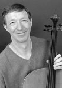

|  |
Scott Ballantyne, described by France's Le Figaro as a "…consummate artist…" who "…provided a rare moment of musicality and poetry in our concert season", studied with Leonard Rose at the Juilliard school. While still a student, he appeared as soloist with orchestras in the U.S., Brazil, Canada and Mexico. After graduating, he joined the faculty of Juilliard and devoted himself to teaching. His students populate orchestras from the New York Philharmonic to the Seoul, Korea Philharmonic, chamber music ensembles like the Lark Quartet and the Carnegie Chamber Players and are rising young soloists such as Jennifer Combs and Sun-ju Kim. Returning to performing in the 1990's he is now too busy to teach.
A highlight of Ballantyne's 2001-2002 season was an appearance at Alice Tully Hall to a sold-out house. At this event, described by critic Robert Lenz as "One of the most impressive events I have seen in over 30 years of concert going," he gave the world premiers of cello concerti by Frank Levy and Ernst Levy with George Maull and the Philharmonic Orchestra of N.J. Ballantyne/Maull also recorded these works with the National Polish Radio Orchestra for the OPUS ONE label. Other notable performances of last season were his first appearances in Iceland, a Beethoven Triple performance with the Atlantic Chamber Symphony (Lukas Foss, conductor) and a return to Europe and Asia. The recipient of many awards and prizes, last season he received the prestigious Morgan Foundation Career development award.
This season, in addition to his usual concerts in the U.S. and abroad, he returned to Tully Hall as soloist in Tan Dun's "Crouching Tiger Concerto" with Little Orchestra Society (Dino Anagnost, conductor) and premiered Jack Gottlieb's Fantasy for Solo Cello.
In addition to his busy career as soloist, he is also a founding member of the Leonore Trio (Steven Masi, piano, Rebekah Johnson, violin). Described as "…one of the most exciting new groups on the chamber music scene," the trio tours widely, is heard frequently in the U.S. on National Public Radio's "Performance Today" series and has also been featured on broadcasts in Europe. The Leonore Trio has recorded music of Levy, Schubel, Kauder and Sheng for OPUS ONE.
|